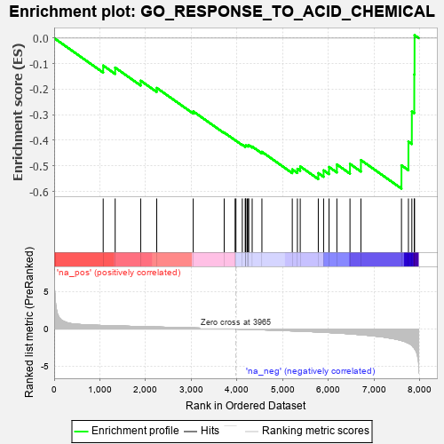
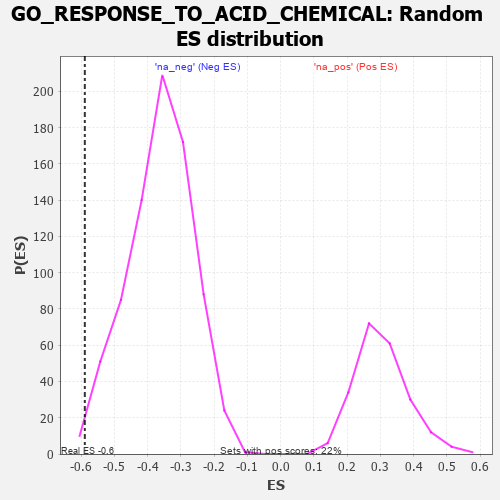

| | | Dataset | 7d |
| Phenotype | NoPhenotypeAvailable |
| Upregulated in class | na_neg |
| GeneSet | GO_RESPONSE_TO_ACID_CHEMICAL |
| Enrichment Score (ES) | -0.5889922 |
| Normalized Enrichment Score (NES) | -1.6251057 |
| Nominal p-value | 0.010256411 |
| FDR q-value | 0.07711658 |
| FWER p-Value | 1.0 |
Table: GSEA Results Summary

Fig 1: Enrichment plot: GO_RESPONSE_TO_ACID_CHEMICAL
Profile of the Running ES Score & Positions of GeneSet Members on the Rank Ordered List
| PROBE | GENE SYMBOL | GENE_TITLE | RANK IN GENE LIST | RANK METRIC SCORE | RUNNING ES | CORE ENRICHMENT | | 1 | AIFM1 | | | 1072 | 0.469 | -0.1074 | No |
| 2 | UBR2 | | | 1334 | 0.423 | -0.1154 | No |
| 3 | GLRA2 | | | 1892 | 0.321 | -0.1667 | No |
| 4 | CREB1 | | | 2243 | 0.269 | -0.1949 | No |
| 5 | UFL1 | | | 3041 | 0.144 | -0.2869 | No |
| 6 | HSF1 | | | 3718 | 0.039 | -0.3697 | No |
| 7 | GLRA1 | | | 3957 | 0.001 | -0.3996 | No |
| 8 | CRLS1 | | | 3975 | -0.003 | -0.4016 | No |
| 9 | MTOR | | | 4114 | -0.025 | -0.4175 | No |
| 10 | PDX1 | | | 4179 | -0.038 | -0.4233 | No |
| 11 | RRAGD | | | 4183 | -0.039 | -0.4214 | No |
| 12 | SESN1 | | | 4192 | -0.041 | -0.4200 | No |
| 13 | RRAGA | | | 4223 | -0.046 | -0.4211 | No |
| 14 | LRP11 | | | 4250 | -0.050 | -0.4215 | No |
| 15 | RPTOR | | | 4252 | -0.050 | -0.4186 | No |
| 16 | OPA1 | | | 4330 | -0.065 | -0.4245 | No |
| 17 | NTRK2 | | | 4543 | -0.104 | -0.4451 | No |
| 18 | IPO5 | | | 5207 | -0.248 | -0.5140 | No |
| 19 | CD9 | | | 5319 | -0.277 | -0.5117 | No |
| 20 | GRIN1 | | | 5381 | -0.291 | -0.5022 | No |
| 21 | GLRB | | | 5776 | -0.398 | -0.5284 | Yes |
| 22 | CDO1 | | | 5892 | -0.432 | -0.5175 | Yes |
| 23 | XBP1 | | | 6011 | -0.475 | -0.5044 | Yes |
| 24 | KLF2 | | | 6182 | -0.532 | -0.4945 | Yes |
| 25 | GLRA3 | | | 6469 | -0.648 | -0.4924 | Yes |
| 26 | EGFR | | | 6708 | -0.765 | -0.4774 | Yes |
| 27 | ASNS | | | 7595 | -1.547 | -0.4980 | Yes |
| 28 | CASP3 | | | 7747 | -1.902 | -0.4052 | Yes |
| 29 | PKD2 | | | 7822 | -2.167 | -0.2871 | Yes |
| 30 | MMP2 | | | 7875 | -2.574 | -0.1422 | Yes |
| 31 | FYN | | | 7881 | -2.622 | 0.0113 | Yes |
Table: GSEA details [plain text format]

Fig 2: GO_RESPONSE_TO_ACID_CHEMICAL: Random ES distribution
Gene set null distribution of ES for GO_RESPONSE_TO_ACID_CHEMICAL